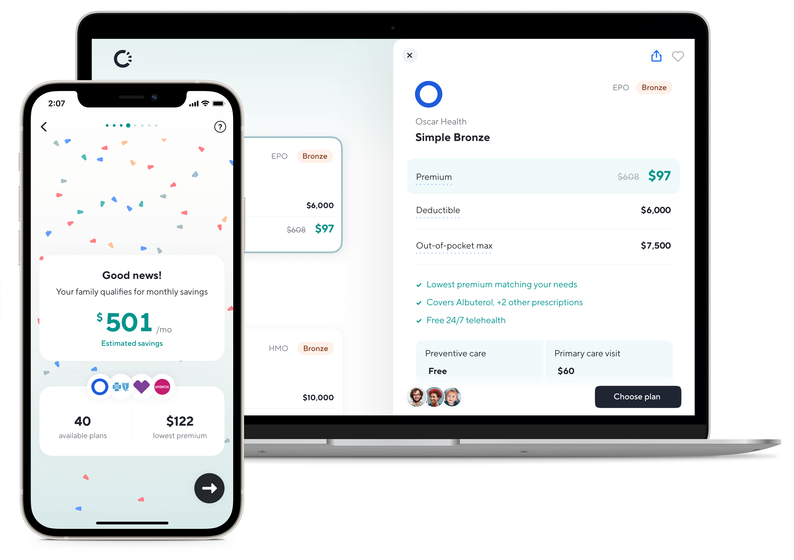

My name is Zack Labadie. I’ve been fascinated by the intersection of design, tech and humans for as long as I can remember.
I'm currently the Lead Product Designer at Magic, working with a stellar team to build a secure, delightful, passwordless future. In other words, an Internet made for people, not credentials.
Before joining Magic in April 2021, I was a founding designer at Catch, where I helped build, launch, and scale the world's first portable benefits platform. During my three years there, I had the pleasure of working alongside some immensely talented folks while diving headfirst into the world of savings, investments, and insurance.
I wear many hats, literally and figuratively. I'm a proud generalist who loves collaboration, champions accessibility, and nerds out over complex systems. I oscillate between the macro and micro, interrogating the big picture without sacrificing finer details. I've led projects of all sizes from initial ideation to post-release iteration, a labor of love I just can't get enough of.
Interested in who I am outside of problem-solving and pixel-pushing? Head over to my Notion page to see what I've been up to lately. Seize the day, call your mom, and thanks for stopping by! ✌️